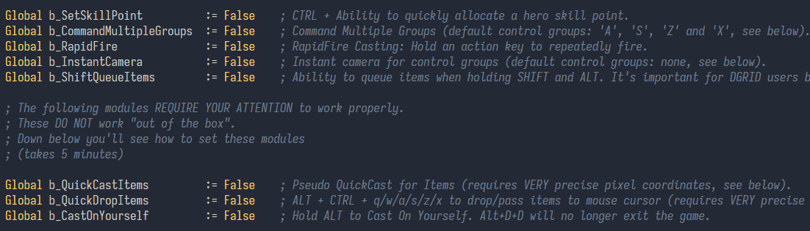

Displaced Grid
by etofok
Advanced Hotkey Layout For Warcraft III
...and 8 new gamebreaking modules

'Displaced Grid' is a hotkey layout designed for ergonomics and speed.

Warcraft 3 is one of the GODFATHERS of not only the RTS genre but competitive gaming in general.
It comes as no surprise that it's one of the most hotkey-intensive games.
At 200 Actions-Per-Minute and an average game length floating at around 15 minutes...
We are looking at 3000+ actions PER GAME!
Now, think of how many games an active player might have in one day? In a week? Over the years?..
Why use a hotkey layout designed for ergonomics...of 2001?
 Windows Millennium, released during Warcraft 3 development in 2000
Windows Millennium, released during Warcraft 3 development in 2000
The goal was to reduce the gap between what we WANT to do in-game...
and what we can physically do in-game :)
 the gap between the 'intent' and the 'execution'
the gap between the 'intent' and the 'execution'
Truth is: the worse the interface - the bigger the gap between our intention and our execution.
And the 'slower' player suffers the most from this gap.
So instead of fighting the game, Displaced Grid is designed to fight the opponent.
A better interface enables us to better execute our decisions and desires.
Which means our play is more efficient and faster
And as a bonus - without hand fatigue at all!
Aside from the 'Displaced Grid' layout, the package comes with 8 extra modules
Modules follow the same logic of 'bridging the gap' explained earlier.
But...
Please understand: using these modules against an unaware player is technically cheating.
Because modules massively improve our ability to interact with the game => they provide a competitive advantage.
All modules are extras. Optional to use.
RTS games fell off in popularity not only because of their complexity but also because of the perception that they are difficult to play.
And it is indeed hard to control everything well enough "to play the game".
Some players don't see the dexterity check as a part of the experience.
And some... don't "enjoy sweating out 200 APM"
The intelligence that attracts players to strategy games also makes us very aware of our errors.
Which is a big source of stress.
The gap between our intent and our execution might be too painful to tolerate.
the gap between intent and execution
From a newcomer's point of view, the experienced players might look completely unapproachable.
And we need to invest a lot into our ability to execute the intent.
Into our ability to do what we want to do.
Think about it: when we reduce the gap between the intent and the execution, we bring forward tactical knowledge and strategic decisions.
And vice versa.
 (this is approximate)
(this is approximate)
Whether it's a good thing or a bad thing is up for debate, because with no physical component, you end up with memorization and libraries of flowcharts, as seen in chess and card games.
RTS games gathered a large following, but have a relatively inactive player base.
But the ratio of active players to those who simply follow or watch RTS games is likely one of the lowest in the gaming community.
People do enjoy a good game, but because they don't like their own play, they prefer to watch.
So, to create an RTS with an active PLAYER base, we need to design around accessibility.
Therefore, we need to design a great interface first.
Displaced Grid is my attempt to do exactly that.
Disclaimer: the code might not look pretty for some of you senior level software engineers: I made it all from scratch over 6 months of learning autohotkey. I am aware that it may not meet enterprise-level standards. All code is available on GitHub.
Download Autohotkey v1.1 (not v2!): https://www.autohotkey.com/
Download 'Displaced GRID' from Github: Click to Download now
Run "(RUN THIS FILE) Displaced GRID.ahk" with Autohotkey v1.1
"Displaced GRID" will appear in your Tray menu
Right click on this icon to get access to Tray Menu:
The layout will work out of the box.
The tray icon indicates whether it is On or Off
The layout is active ONLY when the Warcraft III window is active.
When Warcraft III is not active (i.e., when you're tabbed out), your regular hotkeys will be in effect.
Please note that when the layout is active, you cannot type in chats because your keys are heavily remapped.
You can toggle the layout On or Off using a hotkey.
The default key is ScrollLock.
You can change the hotkey in 'UserSettings.ahk' (open it with Notepad).
"IMAGE_OVERLAY.png" is displayed on top of the Warcraft III window.
(window, not full screen!)
It's aligned for the 1920x1080 16:9 resolution.
If you DON'T play in 16:9 - the overlay will be off grid.
In this case you'll need to adjust the overlay to your resolution.
This is how I do it:
Some modules require very precise pixel coordinates to work. Otherwise they will not work.
For example, we can visually see that an item is on cooldown by its blue countdown overlay.
But we need to know where to check for it on the screen.
That's why the app needs to know where YOUR item slots are located on YOUR user interface.
If you DO play in 1920x1080 - everything should work without any modifications.
If you DON'T play in 1920x1080 - you will need to adjust a few things in a very unintuitive way (I promise).
Find the X,Y coordinates of this one (1) exact pixel of every item while it is on cooldown.
This might sound very difficult, but imagine coming up with this shit.
Here is the walkthrough of how to do it.
Please watch this short video, I will explain this in a second.
Now QuickCast Items and QuickDrop Items modules will work correctly on your resolution.
---
'Cast on Yourself' module clicks the portrait so it needs to know where the portait is on your screen.
Adjust the X,Y coordinates in 'UserSettings.ahk' for the Portrait UI element as well, so that you can use 'Cast on Yourself' module.
---
For the Command Multiple Groups module see this:
---
For the 'Instant Camera' module see this:
In 'UserSettings.ahk' (open in Notepad) you can Enable / Disable modules on App start.
Set "True" to Enable a module.
Set "False" to Disable a module.
Disabled modules won't appear in the App Tray Menu.
This is useful if you only want to use the Displaced Grid layout, without any modules.